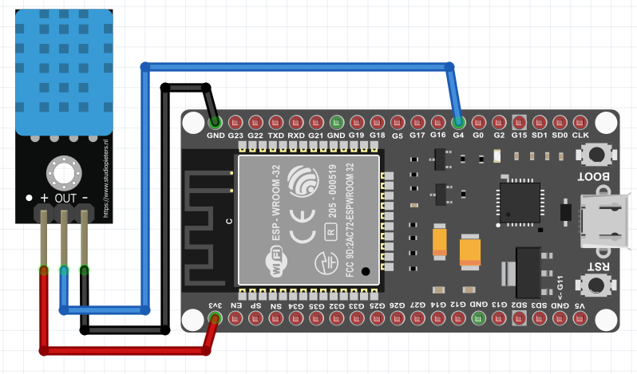

Modul 05
/ Persiapan FirebaseMenampilkan Data Sensor Realtime ke Web
............
1. Firebase Realtime Database
https://latihaniot-default-rtdb.firebaseio.com/
dht11
* Klik item suhu atau humidity di atas untuk mengubah data yang dipantau!
2. Hasil Tampilan Web (Output)
index.html
* Tampilan layar web ini diperbarui otomatis begitu data di database berubah.
3. Kode Program Utuh (`index.html`)
index.html
// BLOK 1: Tempat
Menampilkan Teks di Web
<!DOCTYPE html> <html> <head> <title>Monitor Web Realtime</title> </head> <body> <h1>TEMPERATURE: <span id="nilaisensor">27.20</span> °C</h1>
// BLOK 2: Mengambil
Library Firebase
<script type="module"> import { initializeApp } from "https://www.gstatic.com/firebasejs/10.12.2/firebase-app.js"; import { getDatabase, ref, onValue } from "https://www.gstatic.com/firebasejs/10.12.2/firebase-database.js";
// BLOK 3: Pengaturan Kunci
Firebase Kamu
// Ganti isi API_KEY dan databaseURL sesuai akun Firebase milikmu const firebaseConfig = { apiKey: "........", databaseURL: "........", projectId: "........" }; // Menghubungkan aplikasi ke Firebase const app = initializeApp(firebaseConfig); const db = getDatabase(app);
// BLOK 4: Mengambil &
Menampilkan Data Realtime
// 1. Tunjuk alamat data di database const sensorRef = ref(db, "dht11/suhu"); // 2. Dengarkan data dan tampilkan ke tag HTML #nilaisensor onValue(sensorRef, (snapshot) => { const nilai = snapshot.val(); document.getElementById("nilaisensor").innerText = nilai; });
// BLOK 5: Penutup Tag
</script> </body> </html>
Konsep Firebase JS SDK v10
(Modular)
Firebase versi terbaru menggunakan sistem Modular (hanya mengimpor fungsi yang digunakan). Hal ini menjaga ukuran berkas aplikasi web tetap ringan dan performa pemuatan tetap cepat.
| Kategori / Baris Kode | Penjelasan Fungsi & Perannya |
|---|---|
| 1. Elemen Tampilan Web (HTML) | |
| <h1>TEMPERATURE: <span id="nilaisensor">0.00</span> °C</h1> |
Elemen judul HTML yang menyediakan kontainer
<span id="nilaisensor">
sebagai wadah penampung angka sensor. Angka awal
0.00
akan otomatis tergantikan secara dinamis begitu data dari
Firebase diterima.
|
| 2. Impor Modul & Inisialisasi Aplikasi | |
| import { ... } from "https://..." |
Perintah untuk mengunduh modul/library Firebase SDK resmi
dari CDN Google (gstatic.com) sesuai dengan fitur yang dibutuhkan saja.
|
| initializeApp(firebaseConfig) |
Mendaftarkan dan mengaktifkan koneksi aplikasi web ke proyek
Firebase kamu berdasarkan kunci kredensial yang ada di
firebaseConfig.
|
| 3. Akses & Navigasi Database | |
| getDatabase(app) | Membuka jalur layanan Realtime Database dari aplikasi Firebase yang telah diinisialisasi. |
| const sensorRef = ref(db, "dht11/suhu"); |
Membuat variabel referensi
sensorRef
yang menunjuk tepat ke jalur/node spesifik data suhu ("dht11/suhu") di dalam database.
|
| 4. Mendengarkan & Mengubah Tampilan Web (DOM) | |
| onValue(sensorRef, callback) |
Fungsi listener yang berjalan secara kontinu. Fungsi
ini akan otomatis terpicu dan mengeksekusi kode di dalamnya
setiap kali ada perubahan data pada
sensorRef.
|
| snapshot & snapshot.val() |
snapshot
berisi salinan data mentah dari Firebase, sedangkan
snapshot.val()
digunakan untuk mengambil/mengekstrak nilai aslinya (misal
angka
27.20).
|
| document.getElementById("nilaisensor").innerText = nilai; |
Perintah JavaScript DOM untuk mencari elemen HTML ber-ID
"nilaisensor", lalu mengganti teks di dalamnya (innerText) secara langsung dengan angka sensor terbaru yang didapat
dari Firebase.
|
Skematik Hardware & Pengabelan ESP32 + DHT11

Gambar: Rangkaian ESP32 & DHT11 (GPIO 4)Tabel Koneksi Pinout:
| Pin Sensor DHT11 | Pin ESP32 DevKit | Keterangan |
|---|---|---|
| VCC / (+) | 3V3 | Daya Sensor (3.3V) |
| DATA / OUT | GPIO 4 (G4) | Sinyal Data Digital |
| GND / (-) | GND | Ground / Nol Volt |
Kode Program ESP32 Arduino IDE (`dht11_firebase.ino`)
ESP32 Dev Module
dht11_firebase.ino
#include <WiFi.h> #include <Firebase_ESP_Client.h> #include <DHT.h> // 1. KONFIGURASI WIFI & FIREBASE #define WIFI_SSID "........" #define WIFI_PASSWORD "........" #define DATABASE_URL "........" #define DATABASE_SECRET "........" // 2. KONFIGURASI PIN SENSOR DHT11 (GPIO 4) #define DHTPIN 4 #define DHTTYPE DHT11 DHT dht(DHTPIN, DHTTYPE); FirebaseData fbdo; FirebaseAuth auth; FirebaseConfig config; void setup() { Serial.begin(115200); dht.begin(); // Menghubungkan ke jaringan Wi-Fi WiFi.begin(WIFI_SSID, WIFI_PASSWORD); Serial.print("Connecting to Wi-Fi"); while (WiFi.status() != WL_CONNECTED) { Serial.print("."); delay(300); } Serial.println("\nConnected!"); // Inisialisasi Koneksi Firebase config.host = DATABASE_URL; config.signer.tokens.legacy_token = DATABASE_SECRET; Firebase.begin(&config, &auth); Firebase.reconnectWiFi(true); } void loop() { float t = dht.readTemperature(); float h = dht.readHumidity(); if (isnan(t) || isnan(h)) { Serial.println("Gagal membaca sensor DHT11!"); delay(2000); return; } // Mengirim data suhu ke path: dht11/suhu if (Firebase.RTDB.setFloat(&fbdo, "dht11/suhu", t)) { Serial.print("Suhu terkirim: "); Serial.println(t); } // Mengirim data kelembapan ke path: dht11/kelembapan if (Firebase.RTDB.setFloat(&fbdo, "dht11/kelembapan", h)) { Serial.print("Kelembapan terkirim: "); Serial.println(h); } delay(2000); // Jeda pengiriman 2 detik }
Ready | Pin Input: GPIO 4 (DHT11)
| Potongan Kode Pokok | Penjelasan Fungsi & Perannya |
|---|---|
| WiFi.begin(SSID, PASS) | Perintah untuk mengkoneksikan modul Wi-Fi pada ESP32 ke router / hotspot sesuai SSID dan password yang telah ditentukan. |
| Firebase.begin(&config, &auth) |
Inisialisasi awal autentikasi koneksi antara ESP32 dengan
Realtime Database Firebase berdasarkan kredensial
DATABASE_URL
dan
DATABASE_SECRET.
|
| dht.readTemperature() & readHumidity() | Fungsi bawaan library DHT untuk membaca nilai mentah suhu (dalam °C) dan kelembapan (dalam %) yang terhubung pada pin GPIO 4. |
| Firebase.RTDB.setFloat(&fbdo, "dht11/suhu", t) |
Fungsi utama untuk
mengirim/mengunggah data nilai suhu
(bertipe desimal/float) secara realtime ke node/path
"dht11/suhu"
di Firebase.
|